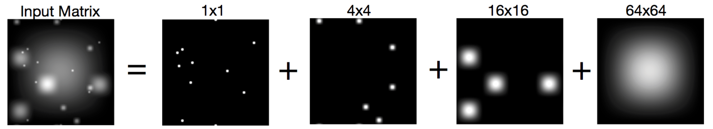
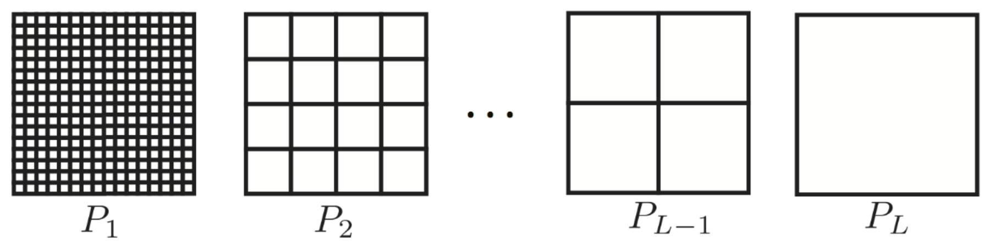
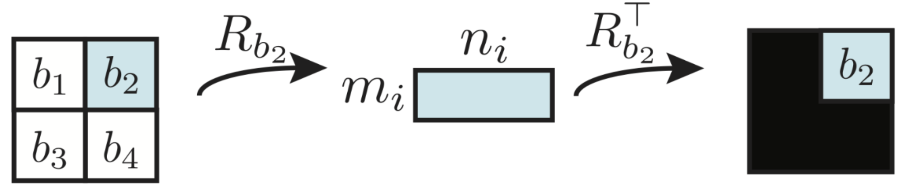
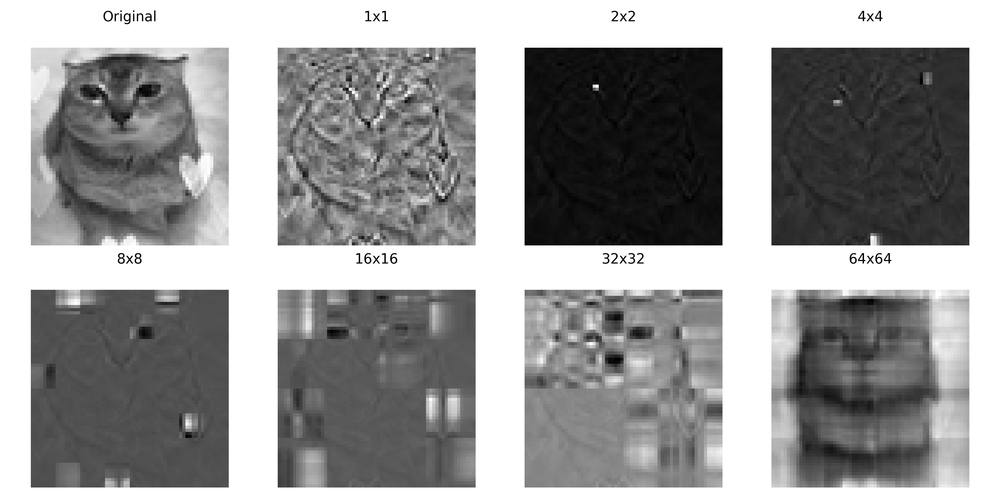

In this project, we survey a method for low-rank matrix
decompositions with broad applications throughout signal and image
processing. We focus on proposed by to generalize sparse and low-rank
decomposition to intermediate data scales. An implementation of
multiscale decomposition is provided along with the necessary
prerequisites to derive their formulation.
Sparse + Low Rank
We begin by motivating the results of through the work of . Suppose
a given data matrix \(Y\) may be
decomposed into a low-rank component \(L\) and a sparse component \(S\) (meaning that the entries are almost
entirely zero, except in several areas that significantly contribute to
the overall rank): \[Y = L_0 + S_0\]
In the above, the rank of \(L\) is not
known, and neither is the number of non-zero elements of \(S\), which results in a very large number
of unknowns in the problem. Surprisingly, were
able to show that \(L_0,S_0\) may be
recovered (with high probability) by solving the tractable convex
problem \[\begin{align*}
\text{minimize} \, \norm{L}_* + \lambda \norm{S}_1 \quad
\text{subject to} \quad Y = L + S
\end{align*}\] where \(\norm{L}_* =
\sum_{i} \sigma_i(L)\). To make sense of whether a particular
feature belongs to the sparse component or the low-rank component, the
authors additionally introduce an incoherence condition on \(L\) that enforces its singular vectors to
be sufficiently spread out. Since the publication of their work, the
sparse + low rank decomposition has been highly impactful for
decomposing data matrices in many applications. Some examples
anticipated in the original work include
Video surveillance footage. Suppose
\(Y\) represents frames of a video
across time. A natural decomposition for this data is \(Y = L + S\) where the low-rank \(L\) is useful for the ambient background
throughout the frames, while \(S\)
captures various objects that appear in the video at different
times.
Face recognition. Suppose \(Y\) represents a dataset of faces which is
known to form a low-dimensional surface . In this case, \(L\) might represent a typical face in the
dataset and \(S\) might represent
additional individual changes or shadows added to the image.
Preference identifcation. Suppose
\(Y\) represents a dataset of user
preferences on some website. While most users may have the same general
interests \(L\), the sparse \(S\) may capture individual variations that
are predictive of their usage trends.
Other applications exist across all domains of modern signal
processing. The more recent results of generalize these decompositions to provide
a flexible framework for detecting correlations within data matrices
across a variety of data features.
Multiscale
If \(Y \in \R^{M \times N}\)
represents a matrix of data, such as an image with gray scale intensity
values, the entries often have some correlation structure. Multi-scale
decompositions account for correlations with different granularity,
aiming to give a structured decomposition of \(Y\): for example, detecting edges in a low
scale component, distinct objects in another an intermediate scale, and
a background colour in the low scale. In this section, we overview how
to fit a multiscale decomposition and provide some examples on image
data. Throughout this section we summarize the original contributions of
, including helpful
figures from their work.

An example of a multiscale decomposition of input \(Y\) into a sum of \(X_1, X_2, X_3, X_4\) where each \(X_i\) reflects the underlying features of
\(Y\) with different scales.
Overview
Consider a data matrix \(Y \in \R^{M \times
N}\). We define the scales of \(Y\) as a set of partitions of its entries
\(\{P_i\}_{i=1}^n\) which define blocks
of \(Y\) (see Figure [fig:multiscalepartition]).
Typically, \(P_i\) is set to be an
order of magnitude greater than the previous \(P_{i-1}\). For each block \(b\) defined by scale-level partition \(P_i\), with block widths \(m_i \times n_i\), we define the
reshaping operator\(R_b\)
which projects \(Y\) onto the \(m_i \times n_i\) block \(b\) (see Figure [fig:reshapeoperator]). The
transpose operator \(R_b^T\) injects
each patch \(b\) into a zero matrix
with the same shape as \(Y\).


Reshape operators \(R_b\),
\(R_b^T\).
The aim of multiscale decomposition is to write \[Y = \sum_{i} X_i
\text{ such that }
X_i = \sum_{b \in P_i} R_b^T (U_b S_b V_b^T)\] where \(U_b, S_b, V_b\) form the rank \(r_b\) SVD of the block \(b\). That is, we write the matrix \(Y\) as a sum of local truncated SVDs of
different scales, aiming to locally reduce the rank of each block.
Note. The sparse + low rank
decomposition (Section 1) may be viewed as a 2-scale
decomposition where \(P_1\) defines the
whole matrix and \(P_2\) defines the
\(1 \times 1\) scale. The example of
the video surveillance footage may be extended in the multiscale
framework by adding an additional partition \(P_i\) to detect persistent features at a
custom time scale.
To fit a multiscale decomposition, we set up an appropriate convex
problem whose minimum gives the solution. Consider the motivating
objective \[\min_{X_1, \ldots, X_L}
\sum_{i=1}^L \sum_{b \in P_i} \text{rank} (R_b(X_i))
\text{ subject to }
Y = \sum_{i=1}^L X_i\] Several issues arise with this
approach: (1) the objective is not convex, (2) splitting into patches
makes the sum over \(b \in P_i\)
combinatorial in nature and (3) for smaller patches the rank penalty may
be excessive. For example, for an element-wise partition a rank 1
penalty and a 1-sparse matrix carry the same cost. Luckily, an
appropriate convex problem can be set up by relaxing the rank
minimization to minimization in a special norm.
Convex problem
We define several norms that are useful for setting up a computable
optimization objective, whose minimum is the desired multiscale matrix
decomposition.
The Ky-Fan\(k\) norm of a matrix \(X \in \R^{M \times N}\) with singular
values \(\{ \sigma_i(X)\}_{1 \leq i \leq
\min\{M,N\}}\)\[\begin{equation}
\norm{M}_{\text{KF}, k} = \sum_{i=1}^{k} \sigma_i(M)
\end{equation}\]
The nuclear norm of \(X \in \R^{M \times N}\) is \(\norm{X}_\text{nuc} = \norm{X}_{\text{KF},
\min\{M,N\}}\).
The maximum singular value norm of
\(X \in \R^{M \times N}\) is \(\norm{X}_\text{msv} = \norm{X}_{\text{KF},
1}\).
For block partition \(P_i\) of \(X \in \R^{M \times N}\), the
block-wise nuclear norm of the \(\mathbf{i}\)-th
scale\[\begin{equation}
\norm{X}_{(i)} = \sum_{b \in P_i} \norm{R_bX}_\text{nuc}
\end{equation}\] is the sum of the nuclear norms of each patch
\(b \in P_i\).
The associated convex optimization problem to compute the multiscale
components of the matrix is \[\begin{equation}
\label{convex_problem}
\text{min}_{X_1, \ldots, X_L} \sum_{i=1}^{L} \lambda_i
\norm{X_i}_{(i)}
\text{ subject to }
Y = \sum_{i=1}^{L} X_i
\end{equation}\] typically \(\lambda_i
\sim \sqrt{m_i} + \sqrt{n_i} + \sqrt{\log(MN /
\max\{m_i,n_i\})}\) where this heuristic follows from optimal
values for Gaussian random matrices . Minimization objective. We formulate the
problem with the alternating direction method of multipliers, by writing
a separable objective with an equality constraint. For the \(L\) scales corresponding to the block
partitions of \(Y\): \[\begin{align*}
\label{OBJ}
\text{min}_{X_1, \ldots, X_L, Z_1, \ldots, Z_L}
&\quad I\left\{Y = \sum_{i=1}^L
X_i\right\}+\sum_{i=1}^{L} \lambda_i \norm{Z_i}_{(i)} \tag{$\star$}
\\ \text{ subject to }
&\quad X_i = Z_i
\end{align*}\] where \(I\)
represents the (inverse) indicator function and \(\lambda_i\) follows the initialization of
Equation [convex_problem].
Consider
the vector space of matrices with the same block-wise row space as the
scale \(X_i\): \[\begin{equation*}
T_i = \left\{ \sum_{b \in P_i} R_b^{\top} \left(U_b X_b^{\top} +
Y_b V_b^{\top}\right) : X_b \in \mathbb{C}^{n_i \times r_i}, Y_b \in
\mathbb{C}^{m_i \times r_i} \right\}
\end{equation*}\] Let \(\mu_{ij} = \max
\{\|N_j\|_{(i)}^*\, \mid \, N_j \in T_j,\, \|N_j\|_{{(j)}}^* \leq
1 \}\) where \(\norm{\, \cdot \,
}_{(i)}^* = \max_{b \in P_i} \norm{R_b(\cdot)}_{\text{msv}}\) is
the dual norm associated to the block-wise nuclear norm. If
regularization parameters \(\lambda_{i}\) can be chosen such that \[\sum_{j\neq i} \mu_{ij} \f{\lambda_j}{\lambda_i}
< \f12\] then the convex problem ([OBJ]) has a unique
solution \(\{X_i\}_{i=1}^L\) which is
the desired multiscale decomposition.
Theorem [thm:guarantee] guarantees that the
minimization ([OBJ]) has the desired solution. We omit the
proof since it is technical (requiring several facts about \(T_i\) and the dual block-wise nuclear
norm), and proceed with obtaining the solution \(\{X_i\}_{i=1}^L\). To compute this
decomposition, the authors propose the alternating direction method
of multipliers , which we now briefly overview.
Alternating
direction method of multipliers
For the sake of completion, we briefly summarize the method of dual
ascent and method of multipliers. Afterward, we discuss the alternating
direction method of multipliers (ADMM) and apply it to the matrix
factorization problem at hand.
The method of dual ascent for
convex differentiable \(f\) (p. 529,
Gallier Quaintance Vol. II) is posed as \[\begin{align}
\label{eqn:default_convex}
\text{min}_{x}
\, f(x) \quad \text{ subject to }
\quad Ax = b
\end{align}\] The associated Lagrangian is then \(L(x,\lambda) = f(x) + \lambda^T(Ax-b)\). By
defining the convex conjugate\(f^*(y) = \sup_{x \in U} (y^Tx - f(x)),\, y\in
\R^n\), the dual formulation gives a unique \(\lambda \in \R^m\) and \(x_\lambda \in \R^n\) with \[G(\lambda) = L(x_\lambda, \lambda) = \inf_{x \in
\R^n} L(x, \lambda)\] If \(\lambda \to
x_\lambda\) is continuous, then \(G\) is differentiable, and \(\nabla G_\lambda = Ax_\lambda - b\) for any
solution of the dual problem. The dual ascent method therefore becomes
gradient ascent applied to the dual function \(G\), and is given by the update steps \[\begin{align*}
x^{k+1} &= \arg\min_x L(x, \lambda_k)
\\ \lambda^{k+1} &= \lambda^k + \alpha^k (Ax^{k+1} - b)
\end{align*}\]\(\alpha^k\) is
some step size, which is difficult to determine in this case.
The method of multipliers is
formulated for the same convex problem (Equation [eqn:default_convex]), except
the Lagrangian is augmented by an addition penalty \[L_\rho(x,\lambda) = f(x) + \lambda^T(Ax-b) +
\f\rho{2} \norm{Ax-b}_2^2\] where \(\rho\) is a certain penalty parameter.
Applying the method of dual descent to \(L_\rho\) yields update steps \[\begin{align*}
x^{k+1} &= \arg\min_x L_\rho(x, \lambda_k)
\\ \lambda^{k+1} &= \lambda^k + \rho (Ax^{k+1} - b)
\end{align*}\] In particular, \(\alpha^k = \rho\) is able to be determined.
Under some mild conditions on \(A\),
the above can be shown to converge to a unique solution, which is in
contrast to simple dual ascent (p. 533, Gallier Quaintance Vol.
II).
The alternating direction method of
multipliers was proposed by for separable optimization objectives
subject to an equality constraint \[\begin{align*}
\label{obj_admm}
\text{min}_{x,z}
&\quad f(x) + g(z) \tag{$\star$}
\\ \text{ subject to }
&\quad Ax + Bz = c
\end{align*}\] where \(f,g\) are
convex, \(x \in \R^n\), \(z \in \R^m\), \(c
\in \R^p\), and \(A \in \R^{p \times
n}, B \in \R^{p \times m}\). The problem can be formulated
similarly to the method of multipliers (p. 533, Gallier Quaintance Vol.
II), where the constraint is enforced with an augmented Lagrangian \[L_\rho(x,z,u) = f(x) + g(z) + u^T(Ax +Bz - c) +
\f\rho2 \norm{Ax + Bz - c}_2^2\] The update steps are implemented
via dual ascent (p. 529, Gallier Quaintance Vol. II) for both \(x,z\): \[\begin{align*}
x^{k+1} &= \arg\min_x L\rho (x, z^k, u^k)
\\ z^{k+1} &= \arg\min_z L\rho (x^{k+1}, z, u^k)
\\ u^{k+1} &= u^k + \rho(Ax^{k+1} + Bz^{k+1} - c)
\end{align*}\] Note that the dual update is done after the \(z\)-update but before the \(x\)-update, so the roles of \(x,z\) are not quite symmetric.
Interestingly, these alternating updates can be viewed as a type of
Gauss-Seidel pass over \(x,z\) instead
of the typical joint update of \((x,z)\).
Returning to the objective ([OBJ]), \[L_\rho(X,Z,U) = I\left\{Y = \sum_{i=1}^L
X_i\right\}+\sum_{i=1}^{L} \lambda_i \norm{Z_i}_{(i)} + U^T(X-Z) +
\f\rho2 \norm{X-Z}_2^2\] To compute the updates for the
multiscale objective ([OBJ]), it suffices to compute the proximal
operators\[\arg\min_X L_\rho(X, Z, U)
\qquad \arg\min_Z L_\rho(X, Z, U)\] of the corresponding \(I\left\{Y = \sum_{i=1}^L X_i\right\}\),
\(\sum_{i=1}^{L} \lambda_i
\norm{Z_i}_{(i)}\). For the indicator, it is simply the
projection operator to the set. For the block-wise nuclear norm, show that the proximal
steps are given by the singular value
threshhold and for the scale regularizer \(\lambda_i\).
Given a regularization \(\lambda\)
and \(X \in \R^{m \times n}\), the
singular value threshhold is \[\begin{equation}
\text{SVT}(X, \lambda) = U \max(\Sigma - \lambda, 0) V^T
\end{equation}\] where \(X=U\Sigma
V^T\) is the SVD of \(X\), and
it is understood that \(\Sigma-\lambda\) is taken componentwise. In
other words we modify the SVD so that for each singular value \(\sigma_i\), we reset \(\sigma_i' = \max(\sigma_i - \lambda,
0)\).
Given a regularization \(\lambda_i\)
and \(X \in \R^{m \times n}\), with
partition \(P_i\) of scale \(i\), the block-wise singular
value threshhold is \[\begin{equation}
\text{BlockSVT}(X, \lambda_i) = \sum_{b\in P_i} R_b^T \,
\text{SVT}( R_b(X), \lambda_i)
\end{equation}\] That is, we simply threshhold each block in the
partition by \(\lambda_i\).
Combining the above discussion, the algorithm to compute the
multiscale matrix decomposition is given by Algorithm [algo]. For the sake
of summary, we omit certain details from the original work .
A heuristic representation of the ADMM approach to obtain a
multiscale decomposition.
Results
We implement Algorithm [algo] in JAX and evaluate on a simple test
case. The results when \(\rho=0.5\) and
\(K=200\) are summarized in Figure 4. For the exact implementation
details, see the attached the Jupyter notebook, or the implementation on
Google Colab:

Multiscale decomposition of a cat image (top left) using the
(Algorithm [algo]) with \(\rho
= 0.5\) and \(K=200\) iterations
using scales \(\{1, 2, 4, \ldots,
64\}\). Scale-level features are apparent after multiscale
decomposition; \(1\times 1\) accurately
capture the edge features of the image, \(16\times 16\) highlight the hearts present
in the original, while \(64 \times 64\)
captures a silhouette of the cat.
The results of Figure 4
demonstrate that the ADMM approach indeed captures certain scale-level
features. Some scales are somewhat noisy, and would likely improve from
more iterations and a larger image size: the original authors use \(256 \times 256\) images with \(\rho = 0.5, K=1024\). Squares of certain
patch resolution are visible in the decomposition in other components,
which is due to the fixed partition throughout the iterations. propose incorporating a
shift operator to threshholding steps \[\begin{equation*}
Z_i^{(k)} \leftarrow \frac{1}{|S|} \sum_{s \in S}
\text{SHIFT}_{-s}\left(\text{BlockSVT}_{\lambda_i/\rho}\left(\text{SHIFT}_s(X_i^{(k)}
+ U_i^{(k-1)})\right)\right)
\end{equation*}\] where \(s \in
S\) is randomly chosen from some a possible set of translations.
This approach would likely lead to improved quality in the
decomposition, reducing the graininess present in the different
components. More refined components may be selected to better capture
the significant features in the image; for example, the \(2 \times 2\) and \(4 \times 4\), \(32 \times 32\) scales are less informative
in Figure 4.
Summary
In this project, we introduced multiscale matrix factorizations , which generalize sparse
and low-rank decompsitions to a general feature detection setting. The
prerequisites to define the convex problem were set forth in order to
define the ADMM objective, which we implemented in JAX to solve the
multiscale matrix decomposition. After running on a test case, the
possible modifications that could improve the decomposition were
discussed, demonstrating the flexibility of multiscale decomposition to
extract desired data features.